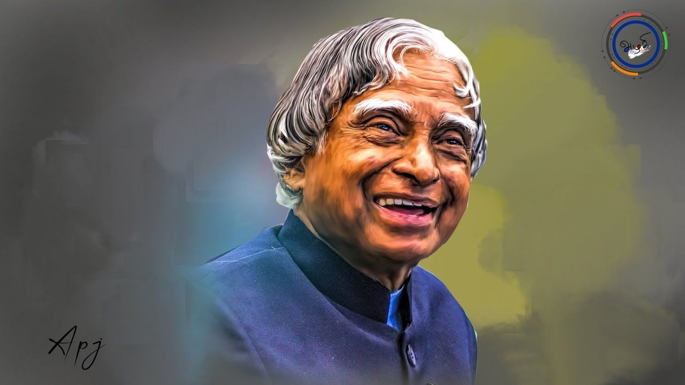

Dr. A P J Abdul Kalam

Dr. A P J Abdul Kalam, Indian aerospace scientist and the 11th President of India
- 1931 : Born in Rameshwaram, Tamil Nadu
- 1954 : Graduated from St. Joseph college, Tiruchirapalli
- 1955 : Enrolled at the MIT to study aerospace engineering
- 1960 : Joined DRDO as chief secratary
- 1965 : Started work roket project independently at DRDO
- 1969 : Transferred to the ISRO
- 1980-90 : Responsible for the development of AGNI and PRITHVI missiles in ISRO
- 1981 : Received Padma Bhushan from the Government of India
- 1990 : Received Padma Vibhushan from the Government of India
- 1992-99 : Served as the Chief Scientific Adviser to the PM and the Secratary of DRDO
- 1997 : Received Bharat Ratna from the Government of India
- 2002-07 : Served as the 11th President of India
- 2015 : Passed away due to cardiac arrest
A scientist and statesman, Dr Kalam rose from humble beginnings to become one of India's most accomplished leaders, earning esteem at home and abroad. -- United States President Barack Obama